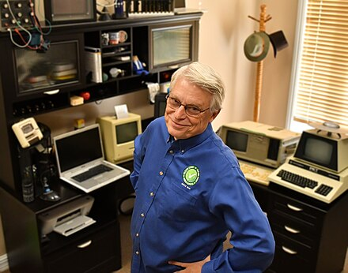
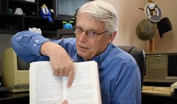

Career
Robert Cecil Martin, affectionately known as "Uncle Bob," has had a long and distinguished career in software development. He began his journey in the 1970s and has since become a highly respected figure in the industry. Throughout his career, Martin has held various roles, including software engineer, consultant, author, and educator. He founded Object Mentor, a company that provided training and consulting services on agile methodologies and object-oriented programming.

Contributions
Uncle Bob is renowned for his significant contributions to the field of software engineering. He is one of the original signatories of the Agile Manifesto and has been a vocal advocate for agile development practices. Martin is also credited with coining the SOLID principles, a set of guidelines for writing clean, maintainable object-oriented code. His books, such as "Clean Code" and "Agile Principles, Patterns, and Practices," have become indispensable resources for software developers worldwide.

Current Activities
Today, Uncle Bob continues to be an active and influential figure in the software development community. He travels extensively, delivering keynote speeches and workshops at conferences and industry events. Martin is also involved in consulting and mentoring, helping organizations adopt agile practices and improve their software development processes. Through his books, articles, and online courses, he continues to share his knowledge and expertise with developers of all levels.